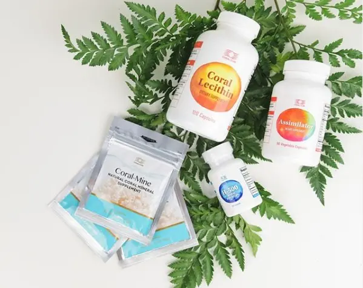
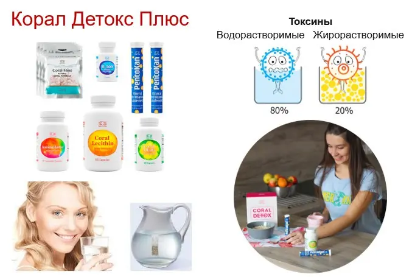
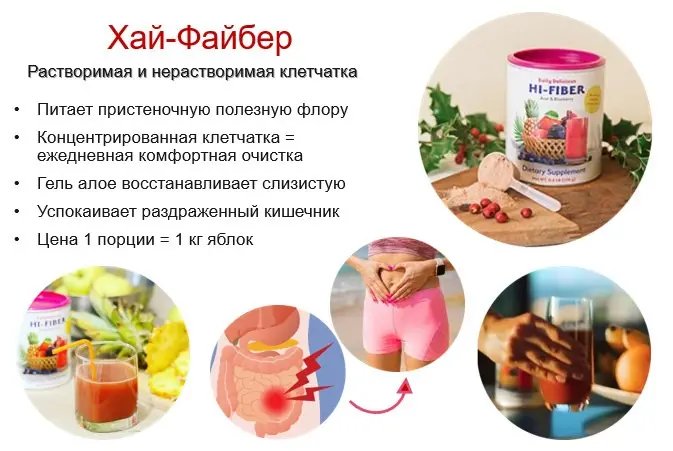
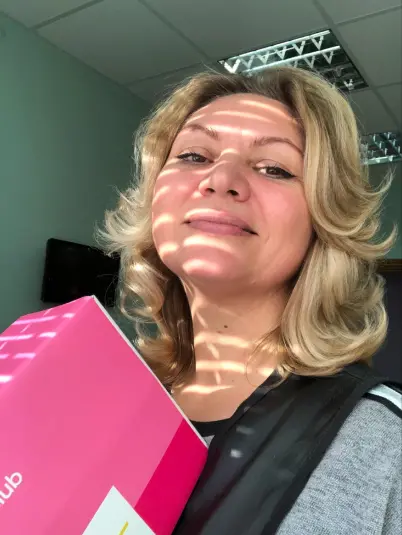
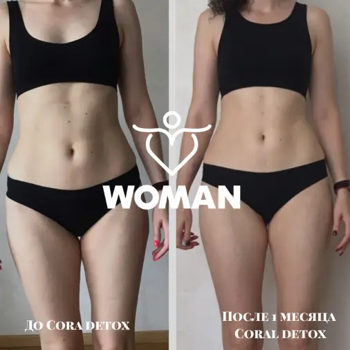

кому подходит
- Людям, которые ведут активный образ жизни
- Всем, кто хочет повысить уровень энергии и улучшить работу желудочно-кишечноготракта
- Всем, кто много работает и не питается правильно
- Всем, кто занимается спортом и профилактикой здоровья
- Всем, кто хочет повысить свои ресурсы здоровья и использовать их экономно иэффективно
- Всем, кто хочет видеть родных и близких здоровыми
описание программы
Программы "Корал Детокс" и "Корал Детокс Плюс" подготавливают организм к болееглубокой очистке, чтобы провести ее мягче. Эту программу можно сравнить сзамачиваем перед основной стиркой.
Здесь происходит размягчение накопленных шлаков и токсины спускаются с клеток вкишечник. Поэтому очень важно следить за его качественной работой.
Минеральный концентрат Корал-Майн готовит воду с наилучшими свойствами.
Корал-Майн и Н-500 помогают токсинам, которые выводятся сводой, эвакуироваться через почки. А Лецитин и Ассимиляторвыводят жирорастворимые токсины через кишечник. Если почки и кишечник по какой-топричине не справляются, то в процесс выведения, как выделительные системы, могутвключаться легкие или кожа.
Видео о степенях зашлакованности организма и каким образом Корал Детокс с нимиработает:
Применение:
1-граммовый пакет-саше Корал-Майн добавляется на 1,5 литра очищенной негазированнойводы. После чего закрывается пакет с кораллом и емкость с водой. Через 5 минут водаготова к употреблению. Её можно пить в промежутках между едой. С едой лучше несмешивать. Пить за 20-30 мин до еды и потом через 1-3 часа после, в зависимости оттого, насколько плотный был прием пищи. Обязательно выпивайте натощак 1-3 стакана.НЕ КИПЯТИТЬ!
Остальные компоненты Корал Детокс Плюс:
- Утро:
- 1 капс Н-500 выпить вместе с утренней коралловой водой
- 1 табл Пентокана растворить в 50 мл воды
- Завтрак через 15-20 мин
- 1 капс Ассимилятора
- 1 капс Корал Лецитина
- С едой (до или после)
- День:
- 1 капс Н-500 с Коралловой водой
- Обед через 15-20 мин
- 1 капс Ассимилятора
- 1 капс Корал Лецитина
- С едой
- Вечер:
- Коралловая вода
- Через 15-20 мин ужин
- 1 капс Ассимилятора
- 2 капс Корал Лецитина
- С едой
Если есть проблемы с регулярным опорожнением кишечника, к этой программе нужнодобавить Каскару Саграду или Хай-Файбер. Они решат этотвопрос.
Каскара - это легкое растительное слабительное. А Хай-Файбер - коктейль изклетчатки. Они запускают работу кишечника, если возникают вопросы.
Применение:
Хай-Файбер: 1 мерную ложку размешать с водой, кефиром или не сладкимйогуртом (150-250 мл). Дать постоять 1 мин и можно кушать.Каскара Саграда: 1-2 капс после ужина.
На этой программе еще можно добавлять Фан Детокс, если мы хотим дополнительноразгрузить печень и Бьюти Шейк, если стоит вопрос коррекции веса.
Применение:
1 стик растворить в 150 мл теплой или густо теплой воды. Помешать иможно пить.

Применение:
2 мерных ложки смешать с водой, молоком или кефиром (150-250 мл). Размешать ложкойили взбить блендером. Дать настояться 1 минуту.
По желанию можно добавить банан, семена чиа, молотый лен, кунжут и другие специи.
Употреблять на завтрак, на ужин или в качестве перекуса днем.
отзывы

Надежда
Надежда
Результат на программе Корал Детокс Плюс :
- почистила свой организм от токсинов
- ушла отечность
- наладился сон
- появилась энергия
- прибавились силы.

ТАмила
Результаты на Корал Детоксе стабильные, он у меня на постояннойоснове.Чем помогает: чувствуется больше энергии при очень серьезной нагрузке наработе и в сравнении с другими коллегами, которые стараются "проснуться"или "зарядиться" с помощью кофе. Я принимаю шикарную воду к-майн +Н-500(2 -3 капс,) + пентокан. Моментально возрастает энергия. Тогда все парыпроходят на одном дыхании!
Наталья
За месяц программы Корал Детокс мои результаты:
Минус 4 кг,
Минус 5 см в объеме,
Минус сухость кожи при возрасте 60+,
Минус пигментация,
Минус быстрая утомляемость!
Плюс хорошее самочувствие, прекрасное настроение, работоспособность,комплименты окружающих!
Ирина
Хочу поблагодарить всех, кто помог мне открыть глаза 👀 на концепциюздоровья, за мои шикарные результаты и понимание того, что здоровье вмоих руках!
Если более конкретно:
- улучшился тургор кожи
- перестали выпирать вены
- кожа гладкая и равномерная
- ушли лишние 3 кг, причём без особых усилий
- наладился ЖКТ
- появилось больше бодрости
- утром нет запаха изо рта и налёта на языке 😛🙃

Тагир
Ушли сильные головные боли.
Появилось больше энергии.
Наладилась работа ЖКТ.
Алина
Снизился вес на 4 кг.
Улучшился сон и стал крепкий.
Стала лёгкость в теле.
Больше энергии.
Уменьшились липомы на теле.
Сетка венозная на ногах почти ушла.
питание на программе
Питание на программе:
Можно проходить в нескольких вариантах в зависимости от целей поздоровью.
Вы не меняете свой рацион питания, а программа помогает вамкомпенсировать те нагрузки на здоровье со стороны питания, стрессов, экологии ит.п., которые вы получаете. Это дает вам возможность поддерживать более высокийуровень качества здоровья.
Но если вы хотите получить не только эффект поддержки, а еще и улучшения, то тогданеобходимо скорректировать питание. Оно может быть изменено именно под ваш запрос -для этого вам нужно обратиться к консультанту. Или воспользоваться стандартнымирекомендациями, которые тоже приносят очень хорошие результаты.
Советы попитанию:
Исключаем из рациона сахар, белую муку высшего сорта и изделия из них,уксус, консервированные продукты, жаренную, копченую и сильно соленую пищу, а такжепродукты длительного хранения и содержащие большое количество консервантов.
Корал Детокс - это первый этап Программы 90 дней (ссылка на П90)
Программа 90 дней (результаты)
Если у вас возникли вопросы или для индивидуального подборапрограммы обратитесь к вашему консультанту. Если у вас его еще нет - вы можетеобратиться ко мне
ваш консультант

наталья талда
+380 50 917 54 63


Для приобретения продукции с -20% скидкой - пройдите по ссылке >>>.
После регистрации с вами свяжется консультант, поможет выбрать продукт и осуществить заказ продукции через сайт в вашей стране.